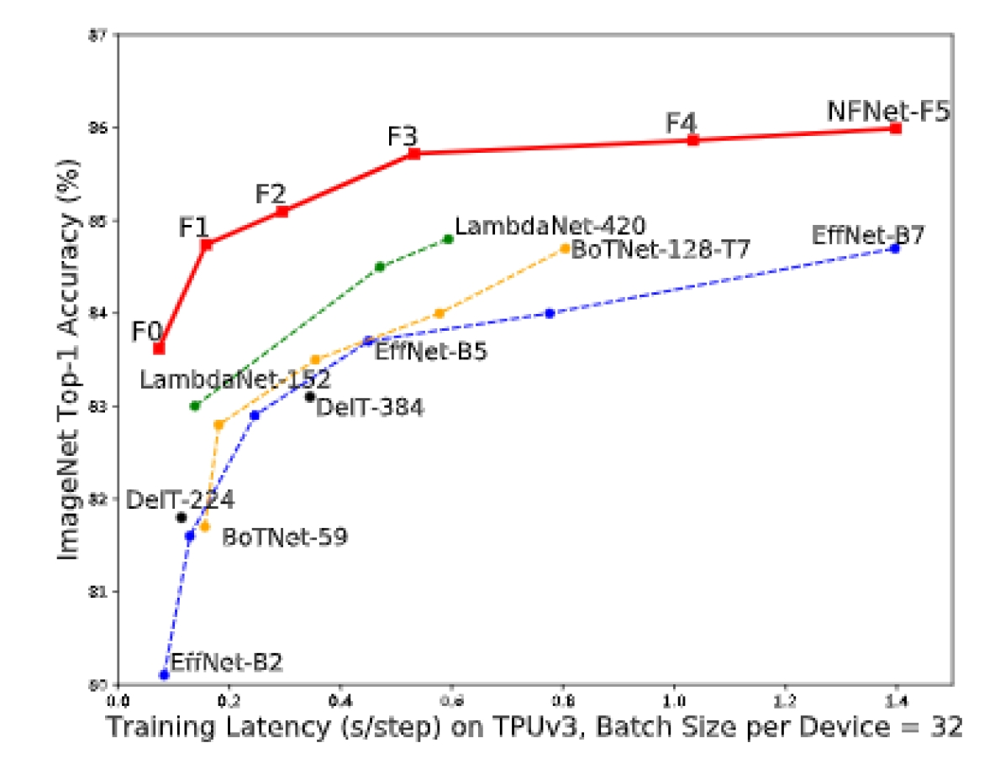

谷歌 DeepMind 发布 NFNet：高效的深度网络
谷歌旗下的 AI 公司 DeepMind 最近发布了 NFNet，一个不需要标准化的 ResNet 图像分类模型。相比于当前表现最佳的 EfficientNet，这一模型的训练速度快了 8.7 倍。
据谷歌 DeepMind 的研究员所说（参考下面的图表）：
NFNet-F1 模型达到了和 EfficientNet-B7 相近的精度，但训练速度却比后者快了 8.7 倍。而且我们最大的模型在不利用额外数据的情况下 top-1 精度达到了 86.5%，树立了新的前沿标准。

对于大规模的图像识别任务，通常神经网络会使用一种叫批标准化（batch normalization）的技术来让模型训练更高效。此外，这种技术也让神经网络泛化性能更好，换言之，它正则化的作用。
然而，批标准化存在一些缺点，比如训练和预测的时候表现不相符。而且由于反向传播（backpropagation，神经网络的学习过程）的需要而在每一层网络存储一些特定的参数，这一操作也提高了计算成本。
DeepMind 提出了 NFNet 以将标准化从等式中移除并提高训练表现。此外，该公司还提出了一项技术叫做
自适应梯度裁剪（adaptive gradient clipping）
这项技术可以对类似 ResNet 的神经网络使用更大的 batch size 进行训练，从而使网络的训练更加高效。在和 EfficientNet 保持相同精度的前提下，每单位计算资源（使用 GPU 的数量）下该方法能比前者减少 20-40% 的训练时间。

源代码已在谷歌 DeepMind 的 GitHub 仓库发布，基于名为 JAX 的新框架实现。如果想在 NFNet 上执行一步前向操作，只需要运行下面这段代码：
def forward(inputs, is_training):
model = nfnet.NFNet(num_classes=1000, variant=variant)
return model(inputs, is_training=is_training)['logits']
net = hk.without_apply_rng(hk.transform(forward))
fwd = jax.jit(lambda inputs: net.apply(params, inputs, is_training=False))
# 我们将它分成两个 cell 以便我们不用重复地对 fwd fn 进行 jit 操作。
logits = fwd(x[None]) # 给 X 一个新的维度来让它的 batch size 变成 1。
which_class = imagenet_classlist[int(logits.argmax())]
print(f'ImageNet class: {which_class}.')
NFNet 也有一个 Pytorch 实现版本，这表明社区已经接纳了这个发行版：
import torch
from torch import nn, optim
from torchvision.models import resnet18
from nfnets import WSConv2d
from nfnets.agc import AGC # 需要测试
conv = nn.Conv2d(3,6,3)
w_conv = WSConv2d(3,6,3)
optim = optim.SGD(conv.parameters(), 1e-3)
optim_agc = AGC(conv.parameters(), optim) # 需要测试
# 应用 AGC 时，忽略模型的 fc。
model = resnet18()
optim = torch.optim.SGD(model.parameters(), 1e-3)
optim = AGC(model.parameters(), optim, model=model, ignore_agc=['fc'])
最后，YouTube 上一个关于 NFNet 的视频已经收获了超过 30,000 的播放量。
如果发现译文存在错误或其他需要改进的地方，欢迎到 掘金翻译计划 对译文进行修改并 PR，也可获得相应奖励积分。文章开头的 本文永久链接 即为本文在 GitHub 上的 MarkDown 链接。
掘金翻译计划 是一个翻译优质互联网技术文章的社区，文章来源为 掘金 上的英文分享文章。内容覆盖 Android、iOS、前端、后端、区块链、产品、设计、人工智能等领域，想要查看更多优质译文请持续关注 掘金翻译计划、官方微博、知乎专栏。